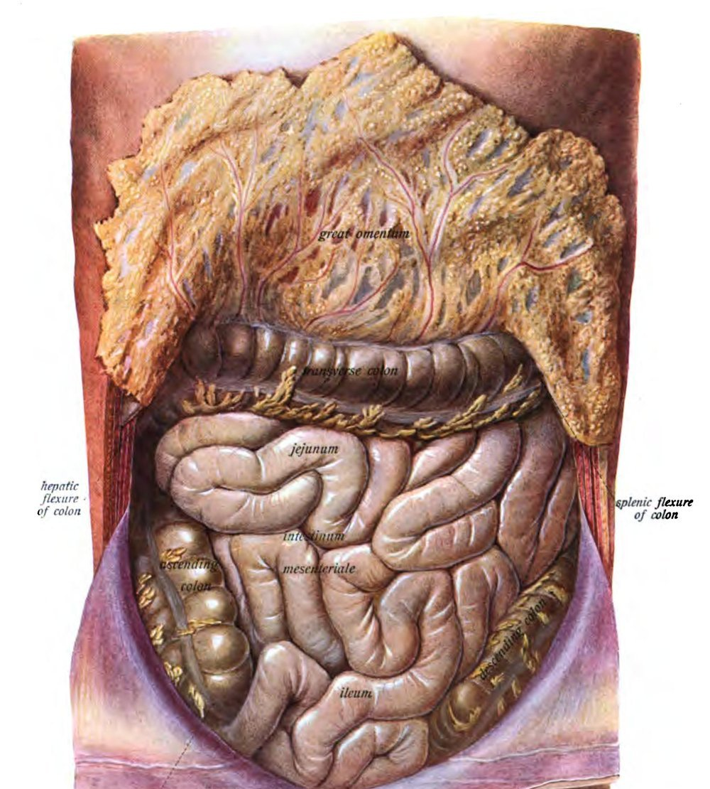
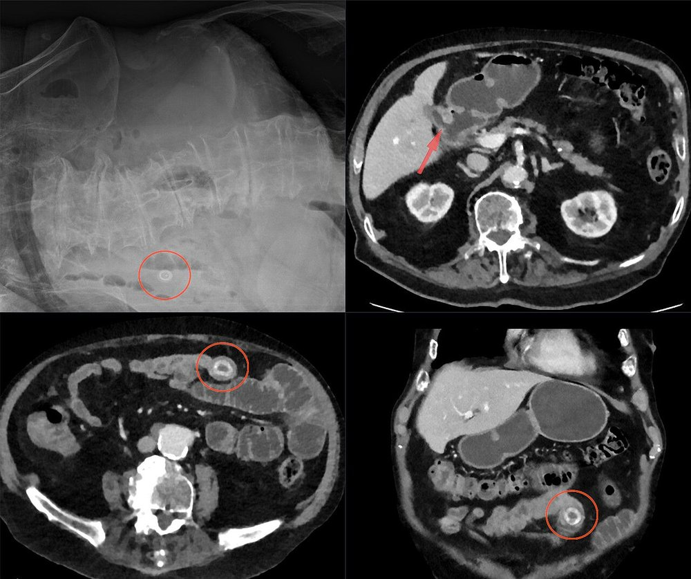
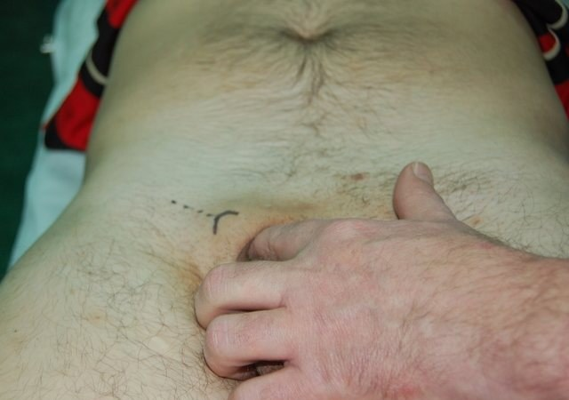
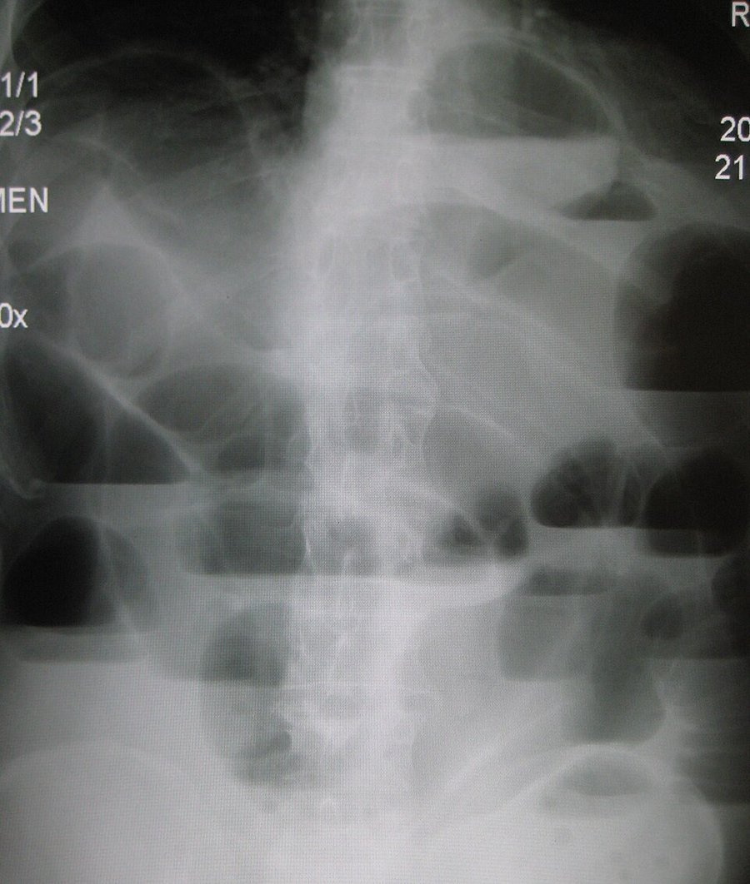
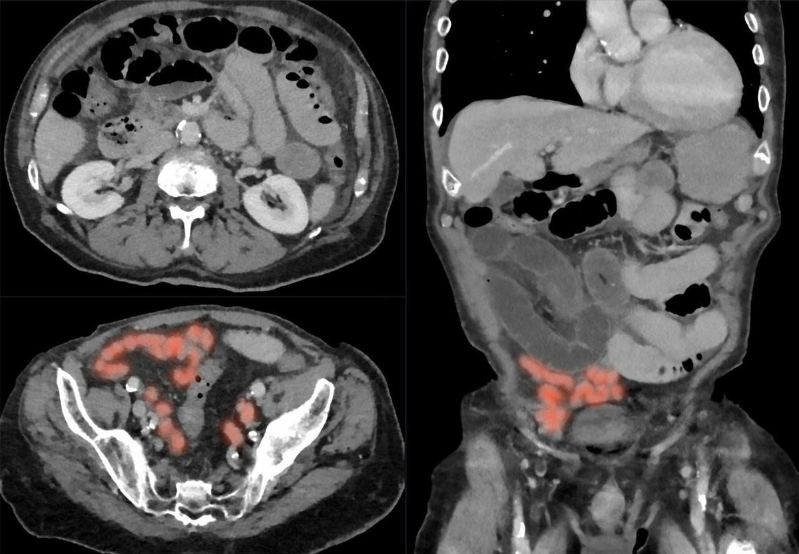
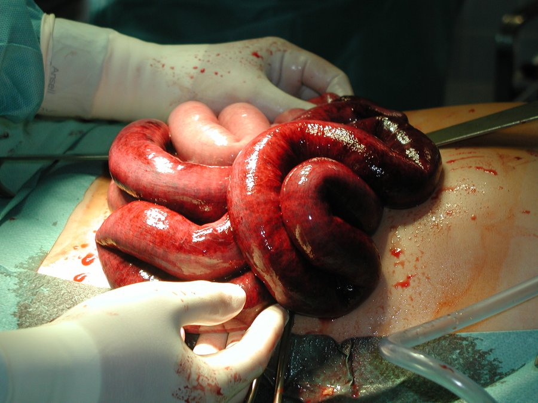

חסימת מעי דק
סיבות, פיזיולוגיה, אבחנה והדמיה, חסימה פשוטה מול חנוקה, טיפול שמרני ומתי לנתח
בסוף המפגש תדעו
- למנות את הסיבות השכיחות לחסימת מעי דק ולהסביר את הפיזיולוגיה שלה
- לזהות את התסמינים והסימנים, כולל ההבדל בין חסימה גבוהה לנמוכה
- לקרוא צילום בטן ולהכיר את מקומו של CT ושל חומר ניגוד מסיס במים
- לחשוד בחסימה חנוקה ובלולאה סגורה ולהבין למה אי אפשר לשלול אותן בוודאות
- לנהל טיפול שמרני ולדעת מתי צריך ניתוח ואיך בודקים חיות של מעי
- להבדיל בין חסימה מכנית לאילאוס
ה-small bowel במקומו

👆 לחצו על אזור בציור כדי לקרוא עליו
בסוף ניתוח מניחים אותו על אזור הניתוח או על אגן חשוף כחלק מטכניקה שמפחיתה הדבקויות. טכניקה טובה היא עדיין הדרך היעילה ביותר למנוע הדבקויות
בחסימת מעי דק ה-colon ריק: בצילום ה-small bowel מורחב ביחס ל-colon ואין גז ב-rectum. סרטן ב-cecum או ב-ascending colon יכול להופיע כחסימת מעי דק
מתחיל ב-duodenojejunal flexure (ligament of Treitz), כ-100–110 ס״מ. דופן עבה, 1–2 arcades עם vasa recta ארוכים. חסימה גבוהה: בחילות והקאות בולטות. לעיתים הן התסמין היחיד. איבוד מיצי קיבה: חוסר כלור ואשלגן ובססת מטבולית
כ-150–160 ס״מ, 4–5 arcades עם vasa recta קצרים. חסימה נמוכה: כאב התכווצותי הוא התסמין הראשון והבולט, פחות הקאות ויותר תפיחות. הפרעות האלקטרוליטים פחות דרמטיות
הדבקויות אחרי ניתוחים באגן (גינקולוגיה, תוספתן, colon) הן יותר מ-60% מהחסימות. המעי נייד יותר באגן וקשור יותר בבטן העליונה
בקע הוא הסיבה השנייה בשכיחותה, כ-10%: מפשעתי, פמורלי, בטני. בכל חולה עם חסימה בודקים מפשעות, ה-femoral triangle ואזור ה-obturator foramen
מה חוסם את המעי?
- אבצס (תוספתן, דיברטיקול, דליפה מהשקה) יכול לגרום לחסימה ולא תמיד חושבים עליו
- אינטוסוספציה במבוגר: לרוב יש נקודת הובלה, פוליפ או גידול
- אבן מרה עוברת למעי דרך פיסטולה בין ה-gallbladder למעי

מה קורה למעלה מהחסימה
ארבעת התסמינים
- ניתוחים קודמים: במיוחד באגן (הדבקויות)
- בקע ידוע, גידול ממאיר, קרוהן, הקרנות לאגן
- שלשול בתחילת המחלה לא שולל חסימה מלאה
תפיחות, צלקות ושערי בקע
- מצב כללי: דופק מהיר ולחץ דם נמוך (התייבשות). חום מרמז על חנק
- הסתכלות: בטן תפוחה, צלקות ניתוח. בחולה רזה רואים לעיתים גלי פריסטלטיקה
- האזנה: בהתחלה קולות מוגברים ו״שאגות״. מאוחר יותר שקט
- מישוש: רגישות קלה, לעיתים גוש. רגישות ממוקדת, רגישות בהרפיה והתגוננות: פריטוניטיס וחשד לחנק
- שערי בקע: מפשעות, ה-femoral triangle, אזור ה-obturator foramen
- בדיקה רקטלית תמיד: גוש חוסם או דם סמוי (גידול, אינטוסוספציה, אוטם)

הצילום עדיין מלמד
- מעבדה לא מאבחנת חסימה, אבל מראה כמה החולה מיובש: נתרן, כלור, אשלגן, ביקרבונט, קריאטינין, שוב ושוב בזמן ההחייאה
- המטוקריט עולה מריכוז הדם ויורד עם הנוזלים. לויקוציטוזיס לא מוכיחה חנק. ספירה תקינה לא שוללת אותו
- לקטט גבוה: חשד לאיסכמיה או לנמק
סימנים בצילום

CT הוא בדיקת הבחירה
- רגיש וסגולי לחסימה מלאה או גבוהה. מראה את המקום ואת הסיבה. פחות רגיש בחסימה חלקית
- לולאה מורחבת מעל 2.5 ס״מ: חשד חזק לחסימה גבוהה
- אזור המעבר: מעי מורחב לפני, מעי קרוס אחרי. מראה גם גידול, דלקת או אבצס
- חומר ניגוד מסיס במים (Gastrografin) דרך זונדה או בפה: מראה את מקום החסימה ולעיתים מזרז את הפתרון (אוסמוטי, מוריד בצקת בדופן)
- אולטרסאונד בהיריון. MRI לא חלק מהבירור הרגיל

חסימה פשוטה או חנוקה?
- פשוטה: חסימה מכנית, דופן המעי חיה. רוב המקרים
- חנוקה: לרוב לולאה סגורה עם פגיעה באספקת הדם. אוטם המעי, יותר תחלואה ותמותה
- הסימנים הקלאסיים: דופק מהיר, חום, לויקוציטוזיס, חמצת לקטית וכאב קבוע. אף אחד מהם לא מזהה או שולל חנק בכל המקרים. גם לא שילוב שלהם
ב-CT

נוזלים, זונדה ומעקב צמוד
- מי מטפל? צוות כירורגי. כך האשפוז קצר יותר, זול יותר, עם פחות אשפוזים חוזרים ופחות תמותה
- נוזלים: החייאה אגרסיבית בתמיסה איזוטונית (רינגר לקטט או סליין). אשלגן רק אחרי שיש שתן
- מעקב: תפוקת שתן (קטטר או איסוף חיצוני), אלקטרוליטים, המטוקריט ולויקוציטים שוב ושוב
- אנטיביוטיקה: אין הוכחה לתועלת בחולה לא רעיל. נותנים לפני ניתוח
- זונדה: מרוקנת את ה-stomach, מקטינה סיכון לאספירציה ואת התפיחות מאוויר שנבלע. מקובלת, אבל ההוכחות לא חד-משמעיות: החלטה לכל חולה. צנתר ארוך למעי לא עדיף
האם החסימה תיפתח לבד?
מתי ואיך מנתחים
ההוריות
- כישלון של טיפול שמרני
- פגיעה באספקת הדם, חנק או ניקוב
לפי הסיבה
- רצועה: שחרור הדבקויות בעדינות. לא לפגוע ב-serosa ולא לפתוח את המעי
- בקע כלוא: החזרת המעי וסגירת הפגם
- גידול מפושט: אם השמרני לא מצליח, לרוב עקיפה (bypass) ולא ניתוח ארוך עם כריתות
- קרוהן: חריף נפתח לרוב בשמרני. היצרות פיברוטית: כריתה או הרחבה (strictureplasty)
- אבצס: ניקוז מלעורי, לפרוסקופי, או לפרוטומיה ושטיפה
- משחררים, עוטפים בפד חם ולח 15–20 דקות ובודקים שוב: צבע ופריסטלטיקה
- דופלר, פלואורסצאין או ICG במקרים גבוליים
- עדיין לא בטוח: סגירה זמנית ו״מבט שני״ אחרי 18–24 שעות. מחליטים כבר בניתוח הראשון
אחרי ניתוח, אילאוס וחסימה חוזרת
אילאוס: אין חסימה מכנית
מחקרים שכדאי להכיר
982 חולים עם חסימה מהדבקויות. 57.1% נפתחו בשמרני, 22.8% נותחו אחרי ניסיון שמרני ו-20.1% נותחו ישר. אשפוז ממוצע: 5.3, 12.9 ו-7.7 ימים. היענות מלאה להנחיות הייתה נמוכה. מי שטופל לפיהן השתחרר מהר יותר
Kaplan LJ et al. Br J Surg 2025;112(4):znaf080100 חולים עם חסימה מהדבקויות שלא נפתחה. חסימה חוזרת תוך 5 שנים: 12.5% בלפרוסקופיה, 9.7% בפתוח. בקע בחתך: כ-6% בשתי הקבוצות. היתרון של הלפרוסקופיה קטן וקצר טווח
Räty P et al. JAMA Surg 2026;161:381-8221 חולים עם סרטן בבטן וחסימה. ״ימים טובים״ (בחיים ומחוץ לבית החולים) ב-91 יום: בלי הבדל בין ניתוח לטיפול לא ניתוחי (42.6 מול 43.9 בזרוע האקראית)
Krouse RS et al. Lancet Gastroenterol Hepatol 2023;8:908-18הסכמה של 54 מומחים על בסיס 323 מחקרים: בחולה יציב הגישה הלפרוסקופית בטוחה ויעילה בניתוחי חירום בבטן. בחירת המטופל היא המפתח
Sermonesi G et al. World J Emerg Surg 2023;18:57חמישה דברים לקחת למחלקה
- הדבקויות ובקעים הם רוב החסימות. בכל חולה: צלקות, שערי בקע ובדיקה רקטלית
- חסימה גבוהה מקיאה, חסימה נמוכה כואבת ותפוחה. שלשול לא שולל חסימה
- CT מאבחן את המקום ואת הסיבה. אף סימן לא שולל חנק בוודאות
- רוב החולים: נוזלים, זונדה, אלקטרוליטים וחומר ניגוד מסיס במים. החמרה: ניתוח
- חום, כאב קבוע, פריטוניטיס או לולאה סגורה: לא מחכים